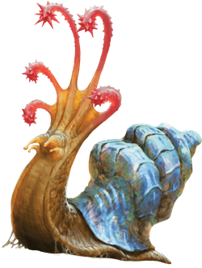

Flail Snail
A flail snail is a creature of elemental earth that is prized for its multihued shell. It may seem harmless, but if a creature big enough to be a threat approaches too close, the snail flashes a scintillating light and attacks with its mace-like tentacles.

Left undisturbed, a flail snail moves slowly along the ground. It consumes everything on the surface, including rocks, sand, and soil, and it stops periodically to relish crystal growths and other large mineral deposits. It leaves behind a shimmering trail that quickly solidifies into a thin and nearly transparent layer. This glassy residue can be harvested and cut to form window panes. It can also be heated and spun into other glass objects. Some folk make a living from trailing flail snails to collect this glass.
Using the Shell of a Flail Snail. A flail snail shell weighs about 250 pounds and has numerous uses. An intact shell can sell for 5,000 gp.
Many hunters seek the shell for its antimagic properties. A skilled armorer can make three shields from one shell. For 1 month, each shield gives its wielder the snail's Antimagic Shell trait. When the shield's magic fades, it becomes an exotic shield that is the perfect item from which to make a spellguard shield.
A flail snail shell can also be used to make a robe of scintillating colors. The shell is ground and added to the dye applied to the fabric. The powder is also a material component of the ritual that enchants the robe.
Environment
(FIXME)
Token

Flail Snail
Large Elemental, Unaligned
- Armor Class 16 (natural armor)
- Hit Points 52 (5d10 + 25)
- Speed 10 ft.
STR DEX CON INT WIS CHA 17 (+3) 5 (-3) 20 (+5) 3 (-4) 10 (+0) 5 (-3)
- Proficiency Bonus +2
- Saving Throws
- Damage Vulnerabilities
- Damage Resistances
- Damage Immunities fire,poison
- Condition Immunities poisoned
- Skills
- Senses darkvision 60 ft.,tremorsense 60 ft.,passive Perception 10
- Languages --
- Challenge 3
Antimagic Shell. The snail has advantage on saving throws against spells, and any creature making a spell attack against the snail has disadvantage on the attack roll.
If the snail succeeds on its saving throw against a spell or a spell's attack roll misses it, the snail's shell converts some of the spell's energy into a burst of destructive force if the spell is of 1st level or higher; each creature within 30 feet of the snail must make a DC 15 Constitution saving throw, taking 3 (1d6) force damage per level of the spell on a failed save, or half as much damage on a successful one.
Actions
Multiattack. The snail makes five Flail Tentacle attacks.
Flail Tentacle. Melee Weapon Attack: +5 to hit, reach 10 ft., one target. Hit: 5 (1d4 + 3) bludgeoning damage.
Scintillating Shell (Recharges after a Short or Long Rest). The snail's shell emits dazzling, colored light until the end of the snail's next turn. During this time, the shell sheds bright light in a 30-foot radius and dim light for an additional 30 feet, and creatures that can see the snail have disadvantage on attack rolls against it. In addition, any creature within the bright light and able to see the snail when this power is activated must succeed on a DC 15 Wisdom saving throw or be stunned until the light ends.
Shell Defense. The flail snail withdraws into its shell. Until it emerges, it gains a +4 bonus to its AC and is restrained. It can emerge from its shell as a bonus action on its turn.